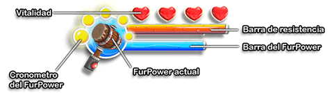

Vitalidad
Tu vitalidad determina cuantos golpes puede soportar tu Furball.
Barra de Ataque (resistencia)
La Barra de Resistencia muestra tu nivel actual de Resistencia.
Al atacar utilizas la Resistencia. Si realizas muchos ataques uno tras otro, tu Furball quedará agotada, así que asegúrate de contar con la Resistencia suficiente antes de atacar a los enemigos. La Resistencia se va recargando automáticamente cuando no se usa.
Barra de FurPower
La barra de FurPower indica el nivel actual de la “energía divina” de tu Furball. Utilizas esa energía cada vez que tu Furball activa una FurPower, como la Súper Velocidad o la Fuerza Aplastante. Para poder recargar tu barra de FurPower, debes comer Moras Rojas.
PISTA: Si tu FurPower se está agotando en un momento crucial, regresa y busca un arbusto de Moras Rojas, ¡estas frutas crecen rápidamente!
Icono de FurPower
Este icono representa la FurPower que se encuentra disponible y activa en tu Furball.